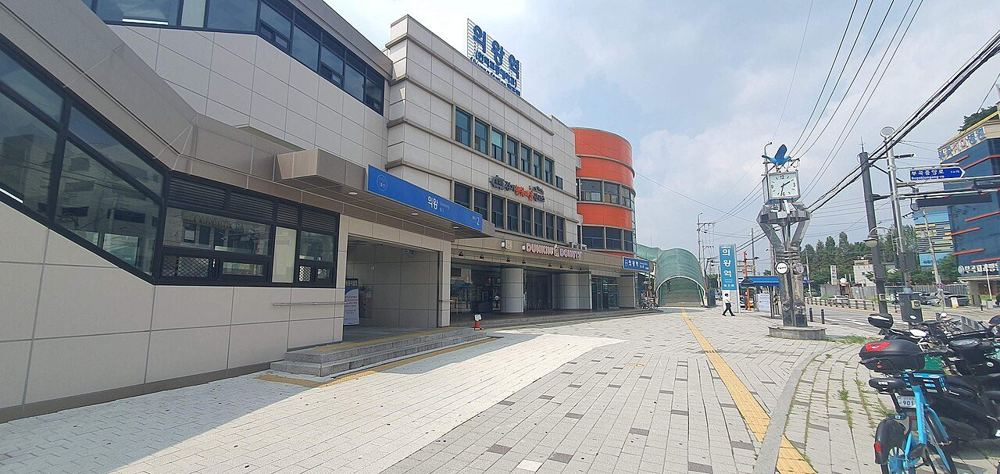
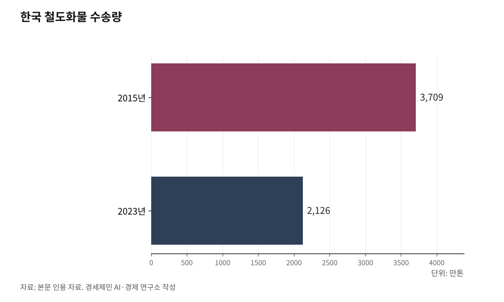

[127년 한국철도⑧] 철도화물 1%, OECD 꼴찌… 항만·산단에 선로를 대라
톤 기준 1.3%, 도로가 다 가져갔다… 독일 19%·프랑스 15%의 한 토막
인천신항엔 철도가 없다… 수도권 짐이 400km 부산까지 도로로
철도가 가장 싼 250~700km 구간을 트럭이 달린다
항만·산단 인입선, 라스트마일을 이어야 화물이 철도로 돌아온다
AI경세제민=김갑봉 기자 | 인하대 해양AI융합센터 김갑봉 연구교수(물류학)│한국 철도는 사람은 빠르게 나른다. 그러나 짐은 거의 나르지 않는다. 여객은 KTX로 세계 수준에 닿았지만, 화물은 도로에 밀려 철길에서 사라졌다. 짐은 왜 철도를 떠났고, 어떻게 되돌릴 것인가. 사라진 화물의 자리를 짚는다.

사라진 화물
2023년 한국 철도화물 분담률은 톤 기준 1.3%, 톤킬로 기준 3.8%다. 어느 기준이든 OECD 꼴찌다. 독일 19.2%, 프랑스 15.4%, 일본 5.1%와는 견줄 수조차 없다.
한 해 철도가 나른 짐은 2126만톤(2023년)이다. 2015년 3709만톤에서 8년 새 43% 줄었다. 나머지 짐은 거의 도로가 가져갔다.
화물은 줄곧 줄었다. 길이 좁아지고 역이 닫히는 사이, 트럭이 그 자리를 메웠다. 사람을 빠르게 나르는 데 매달리는 동안, 짐을 나르는 철도는 잊혔다.

닿지 못하는 선로
까닭은 단순하다. 선로가 짐에 닿지 못한다. 짐은 항만과 공장에서 나는데, 철도는 그 앞까지 가지 않는다.
트럭은 문 앞까지 들어가지만, 화차는 역에서 멈춘다. 마지막 한 구간, 라스트마일이 끊긴 탓이다.
그 끊긴 자리를 잇는 것이 인입선이다. 항만과 산업단지 안까지 선로를 밀어 넣어야, 짐이 부두에서 곧장 화차에 오른다. 한국은 그 인입선이 드물다.
인천신항의 역설
인천신항이 그 민낯이다. 수도권 최대 항만인데 철도가 한 가닥도 닿지 않는다. 국내 3대 항만 가운데 부산신항과 여수광양항엔 인입선이 있지만, 인천신항엔 없다.
그래서 수도권 짐은 거꾸로 흐른다. 수도권에서 난 컨테이너가 철도를 타려면 403km 떨어진 부산신항까지 도로로 내려가야 한다. 그렇게 내려가도 부산-의왕 컨테이너 화물열차는 하루 1~2회뿐이다. 정작 코앞의 인천신항은 비워둔 채다.
인천시는 2024년 3월 국토교통부에 인입선을 제5차 국가철도망 계획에 반영해 달라고 요청했다. 수인분당선 월곶역에서 갈라져 송도 11공구를 지나 인천신항으로 드는 13.2km 노선이다. 아직 확정되지 않았다.
끊긴 산단, 비싼 트럭
공장도 마찬가지다. 평택·화성 반도체, 아산 디스플레이, 울산 석유화학단지가 모두 철도와 끊겨 있다. 큰 짐이 쏟아지는 곳마다 선로가 없다.
철도가 가장 싼 구간은 250~700km다. 이 거리에서 철도는 도로보다 운송비를 30% 넘게 줄인다. 그런데 수도권과 영남을 잇는 그 한가운데 구간을 트럭이 경부고속도로로 달린다. 가장 철도다운 구간을 도로가 차지한 셈이다.
트럭에 밀리는 데는 값과 시간의 이유가 있다. 정부는 2015년부터 화물차에 유가보조금 같은 지원으로 해마다 평균 1조7400억원을 부었다. 반면 화물열차는 선로 배분에서 우선순위가 가장 낮다. 편도 한 번에 평균 35분 늦고, 30분 이내 지연을 정시로 쳐줘도 정시율이 67.4%에 그친다.
값은 도로가 싸고, 시간은 철도가 늦다. 화주가 트럭을 고르는 까닭이다.
화물을 되돌리려면
답은 인입선이다. 항만과 산단 안까지 선로를 이어 라스트마일을 메우면, 짐은 철도로 돌아온다. 탄소도 함께 준다. 철도 화물은 같은 짐을 도로보다 적은 탄소로 나른다.
화물을 되돌리는 일은 안에서 그치지 않는다. 선로는 항만을 지나 대륙으로 이어진다. 다음 편에서 대륙으로 가는 화물을 짚는다.
※ 이 기사는 AI 프로그램 클로드를 활용해 작성했습니다.
참고문헌
· 인천투데이, "[특집 제5차 철도망⑥] 기후위기 시대 철도에서 사라진 화물", 2025.07.21. https://www.incheontoday.com/news/articleView.html?idxno=305604
· 물류신문, "탄소중립시대 철도물류 현황과 전망(유소영 한국철도기술연구원 실장 기고)", 2024.11.05. https://www.klnews.co.kr/news/articleView.html?idxno=314443
· e-나라지표(국가지표체계), "수송량 및 수송분담률". https://www.index.go.kr/unity/potal/main/EachDtlPageDetail.do?idx_cd=1245
· 국가물류통합정보센터, "철도 화물 수송실적(2015~2024)". https://www.nlic.go.kr/nlic/frghtRail0010.action
· "인천시, 송도신항~월곶(인천신항선)·제2공항철도 5차 국가철도망계획 반영 요청", 경기일보, 2024.03.04.
사진 출처
· [대표사진] Aspere, "230814 의왕역.jpg", 위키미디어 공용, CC0, https://commons.wikimedia.org/wiki/File:230814_%EC%9D%98%EC%99%95%EC%97%AD.jpg
※ 이 기사는 인공지능을 활용해 작성했습니다.
관련기사
- [127년 한국철도⑨] 북녘 철길 끊겼다… 화물열차 통째로 배에 실어 대륙으로
- [127년 한국철도⑦] 영국은 쪼개 실패했고 일본은 합쳐 살았다… 한국의 길은 독일에 있다
- [127년 한국철도⑩] 꽉 찬 경부고속선, 하루 190회가 한계… 증설과 재설계, 둘 다 급하다
- [127년 한국철도⑪] 빅3만 흑자, 11곳은 적자… 짧은 하늘길은 철도가 지운다
저작권자 © AI경세제민 무단전재 및 재배포, AI학습 및 활용 금지